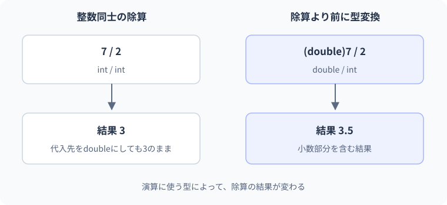

03 型・var・定数 — 詳細解説
整数除算と小数除算。
「7を2で割ると3.5になるはずなのに、3になる」という結果から型を考えます。変数の型、計算に使われる型、値を変更できる期間は別々の問題です。
型による値と操作の制限
型は値の種類と許される操作を定める規則です。「年齢」と「名前」をどちらも曖昧な箱として扱うと、名前へ1を加えるような処理が紛れ込みます。int age = 20;、string name = "Aoi";と宣言すれば、コンパイラーは操作の組み合わせを検査できます。型は値の保存形式だけでなく、プログラムを書く人へ意図を伝える役割も持ちます。
変数宣言は名前と型を決め、初期化は最初の値を与えます。int score;のように宣言だけをしたローカル変数は、値を代入する前に読み取れません。「メモリの中に何かあるはずだから読める」とは扱わず、すべての実行経路で値が決まるかをコンパイラーが検査します。フィールドや配列要素の既定値とは規則が異なります。
整数には範囲があります。intは符号付き32ビット整数で、-2,147,483,648から2,147,483,647までを表せます。longはより広い範囲の符号付き64ビット整数です。範囲を超える可能性がある件数や合計は、業務上の最大値を考えて選びます。型が大きければすべて解決するわけではなく、必要な範囲・精度・単位を先に定めます。
構文と式の評価
int quantity = 3;
int unitPrice = 120;
int total = quantity * unitPrice;
Console.WriteLine(total);期待出力は360です。intは型、quantityは名前、=は代入、3は初期値、;は文の終わりです。quantity * unitPriceは値を計算する式です。この式にも型があり、この例では二つのintからintの結果を作ります。
| 順序 | 式が読む値 | 計算・保存 | 状態 |
|---|---|---|---|
| ① | 3 | quantityを初期化 | quantity=3 |
| ② | 120 | unitPriceを初期化 | quantity=3, unitPrice=120 |
| ③ | 3と120 | 360をtotalへ保存 | total=360 |
| ④ | totalの360 | 文字へ変換して表示 | 変数の値は変わらない |
型情報はコンパイル時の検査に使われ、生成物にも型・メンバーの情報が含まれます。実行時のメモリ配置はCLRやJITの最適化にも関係します。「intなので必ずStackにある」と断定する必要はありません。まずintの代入では値がコピーされるという言語の意味を理解します。メモリの詳細はLesson 13と補助教材で扱います。
int quantity = 3; decimal total = 800m * quantity;という二つの文を例に、計算する型を追います。
- 1quantity
intの3 - 2800m * quantity
quantityをdecimalへ変換して乗算 - 3計算結果
decimalの2400 - 4totalへ代入
decimalの値を保持
代入する前に右辺の型と結果が決まります。どんな結果になるかを調べるときは、左辺だけでなく演算に渡る値の型も確認します。
varとコンパイル時の型推論
varは、初期化式からローカル変数の型をコンパイラーに推論させる記法です。推論とは、この場合はソースを検査する段階で型を決めることです。var count = 3;はintの変数になります。実行中に値に応じて型が自由に変わる宣言ではありません。
var count = 3;
var label = "在庫";
var price = 120.5m;
Console.WriteLine($"{label}: {count}");
Console.WriteLine(price == 120.5m);期待出力は在庫: 3、次の行にTrueです。数値リテラル末尾のmはdecimalを指定します。varそのものではなく初期化式が型を決めているため、120.5なら通常double、120.5mならdecimalです。右側を見れば型が明らかなときにvarは読みやすくなります。結果の型が分かりにくい式では型を明示して構いません。
var count = 3;
count = "三個";この例はintの変数へstringを代入するのでコンパイルエラーです。修正位置は表示用の文字列を代入する箇所です。数値データと表示文字列を分けます。
var count = 3;
string label = $"{count}個";
Console.WriteLine(label);期待出力は3個です。何でも文字列に変えて型エラーを避けると、後の計算が難しくなります。数値として使うものは数値で保持し、表示するときに文字列を作るという分担にします。
整数除算と変換する位置
int total = 5;
int people = 2;
double wrongAverage = total / people;
double correctAverage = (double)total / people;
Console.WriteLine(wrongAverage == 2);
Console.WriteLine(correctAverage == 2.5);期待出力は二行ともTrueです。wrongAverageはdoubleですが、右側のtotal / peopleはint同士の除算です。結果2が作られた後でdoubleへ変換されるため、失われた小数部分は戻りません。(double)totalは明示的な型変換で、除算をする前に一方をdoubleへ変えます。そのため二行目の計算では小数を含む結果2.5になります。
- 1誤った平均
int 5 ÷ int 2
- 2整数除算
小数部分を落として2
- 3doubleへ代入
2.0になっても0.5は復活しない
- 4修正した平均
double 5.0 ÷ 2 → 2.5
整数除算は0へ向かって小数部分を切り捨てます。正数では切り下げのように見えますが、負数にも常に「小さい整数へ丸める」と考えると間違います。-5 / 2は-2です。金額の割り勘なら、端数を誰が負担するかは型変換だけでは決まらず、別の業務ルールが必要です。
本文の実例との対応：整数除算と小数除算
次の図は本文の実例「商品の税込合計」を使った補助例です。この節のコードとは変数や入力値が異なるため、処理の対応に注目します。

金額・小数・丸めを分ける
doubleは広い範囲を扱える2進の浮動小数点数です。浮動小数点とは桁の位置を調整して幅広い数を表す方式で、すべての小数を正確に保持するわけではありません。decimalは10進の計算に向く有限精度の型です。金額によく使いますが、無限精度ではなく、循環小数や極端に大きな数を無制限に表せるわけではありません。
using System.Globalization;
decimal unitPrice = 198.5m;
int quantity = 3;
decimal subtotal = unitPrice * quantity;
decimal tax = Math.Round(subtotal * 0.10m, 0, MidpointRounding.AwayFromZero);
decimal total = subtotal + tax;
Console.WriteLine(subtotal.ToString("F1", CultureInfo.InvariantCulture));
Console.WriteLine(tax.ToString("F0", CultureInfo.InvariantCulture));
Console.WriteLine(total.ToString("F1", CultureInfo.InvariantCulture));期待される出力：
595.5
60
655.5Math.Roundは丸めるメソッドです。ここでは「小計に税率を掛け、0桁へ四捨五入相当の規則で丸める」という教材用の仕様を明示しています。実際の金額計算では適用する規則を要件として確認します。CultureInfo.InvariantCultureは環境に依存しない書式を選ぶ指定です。カルチャーは小数点や日付の表記などの文化的な規則で、Lesson 22で扱います。ここでは実験結果の小数点を揃えるために使っています。
三つの段階を分けて追います。小計は595.5、丸める前の税は59.55、丸めた税は60、合計は655.5です。表示のF1は小数一桁の表示書式です。書式を変えることと、保存する計算値を丸めることは別の処理です。
decimalを選ぶことと、どの段階で端数を処理するかは別の設計です。1明細の税額が0.6円となる明細が2件あり、整数円へ四捨五入する例で比べます。
0.6→1、0.6→1合計の税額は2円
0.6+0.6=1.2→1合計の税額は1円
この二つの方法は異なる結果になり得ます。以下の金額コードも、型だけでなく丸める位置と規則を確認して読みます。
境界・比較例：丸める位置による違い
decimalを使うだけでは丸め方は決まりません。商品の単位か、注文の単位かによって1円の差が生じます。
decimal unitPrice = 105m;
int quantity = 2;
decimal perItem = decimal.Floor(unitPrice * 1.10m) * quantity;
decimal perOrder = decimal.Floor(unitPrice * quantity * 1.10m);
Console.WriteLine($"商品ごと: {perItem}");
Console.WriteLine($"注文全体: {perOrder}");想定出力
商品ごと: 230
注文全体: 231const・readonly・通常の変数
constはコンパイル時に値を決める定数です。宣言後に代入し直せません。readonlyフィールドは、通常は宣言時やそのフィールドを持つ型のコンストラクターなど、代入できる場所を制限します。フィールドとは型やオブジェクトに属する保存領域、コンストラクターとはオブジェクト生成時に初期状態を整える処理です。クラスを学ぶLesson 09で具体化します。
| 種類 | 値を決める主な時点 | 選ぶ場面 | 誤解しやすいこと |
|---|---|---|---|
| 通常のローカル変数 | 実行時 | 合計や入力など処理で変わる値 | 後から型まで変わるわけではない |
const |
コンパイル時 | 本質的に固定の定数 | 設定ファイルの値は直接使えない |
readonlyフィールド |
宣言・生成時など | オブジェクトごとに決めて差し替えない値 | 参照先の内部まで不変とは限らない |
公開するconstの値は利用側へ埋め込まれることがあるため、ライブラリの更新だけで利用側の値が変わるとは限りません。頻繁に変わる料金や設定を安易に公開定数へ固定しない判断にもつながります。
オーバーフローの発見と修正
int value = int.MaxValue;
try
{
int next = checked(value + 1);
Console.WriteLine(next);
}
catch (OverflowException)
{
Console.WriteLine("intの範囲を超えました");
}期待出力はintの範囲を超えましたです。checkedは対象の整数演算などで範囲超過を検査します。例外は実行中の異常を伝える仕組み、try/catchはその異常を受け取る構文です。ここでは失敗を安全に観察するために使用し、詳しい設計はLesson 16で学びます。検査しない整数演算では値が回り込む場合があります。
合計の範囲を広げる修正なら、計算前にlongへ変換します。long total = (long)price * quantity;とすることで、intの乗算後に代入する誤りを防げます。失敗を消すためにuncheckedを付けるのではなく、扱う最大値が仕様に合うかを確認します。
intには表現できる上限があります。ここでは変数に入った上限値へ1を足す場合を考えます。
2,147,483,646上限の一つ前
2,147,483,647intの上限
上限 + 1（checked）OverflowException
上限 + 1（unchecked）-2,147,483,648
checkedは範囲外を検出するための仕組みです。値が大きくなる仕様ならlongなどの型の選択も必要で、例外を消すだけでは解決しません。
段階別の練習と解き方
基礎は、var value = 10m;の型と、value = 20m;ができるかを説明する課題です。型はdecimalで、同じ型の代入はできます。varを定数の宣言と混同しないことが目的です。
標準は、7件を2日で処理した一日平均を小数として求めます。入力7と2に対して出力3.5が要件です。double average = (double)7 / 2;が解答例で、(double)(7 / 2)では3になります。別解は7.0 / 2です。変換するタイミングを説明できることを採点基準にします。
応用は、単価1,500,000,000円、数量3の合計をlongで保持することです。long total = (long)1_500_000_000 * 3;で4,500,000,000になります。数値内の_は読みやすくする区切りです。longの変数へ代入するだけで右側の計算まで自動的にlongになる、という誤解を避けます。
公式資料
確認日：2026年9月14日。本文の理解を補うための資料です。学習対象は.NET 10 / C# 14です。パッチ番号は固定しません。